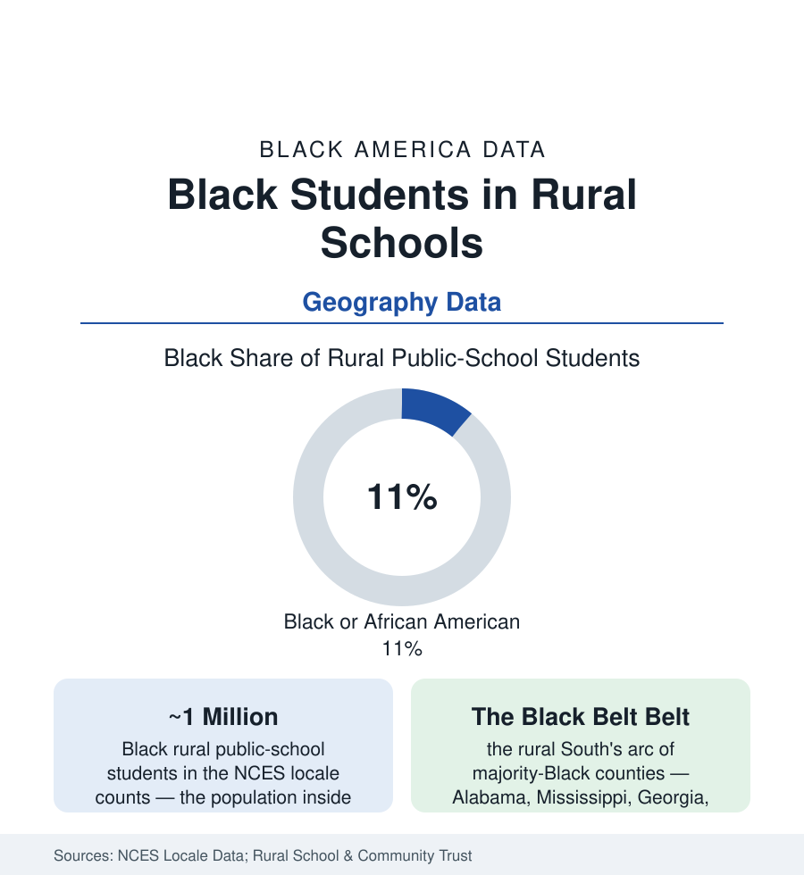

Black Education
Black Students in Rural Schools: A Million Children Off the Urban Map
About one in eight Black students attends a rural school — concentrated in the Southern Black Belt — where the data problems are distance, broadband, and the teacher vacancy. The NCES rural file.

The national imagination files Black education under 'urban' — and misses roughly a million children. About one in eight Black public-school students attends a rural school in the NCES locale data, concentrated overwhelmingly in the rural South: the Black Belt counties of Alabama and Mississippi, the South Carolina corridor, south Georgia, the Louisiana parishes, eastern North Carolina — the plantation geography's school map, where districts are majority Black, poor, and rural all at once, and where the education conversation's urban instruments (the charter networks, the foundation initiatives, the research universities' labs) largely do not reach. This article reads the rural file.
The Map: Where Rural Black Students Learn
The locale data distinguish the rural Black Belt from the rurality of the national statistics (mostly white, mostly northern and western): the Southern rural districts where Black students are the majority or the largest plurality of enrollment — several hundred districts across the arc, many of them county-wide systems whose school is the county's largest employer and only public institution of scale. The demographics inside them follow the rural-census file: the aging and out-migration (the graduates leaving for the metros of the cities section — the rural school's success measured partly by its departures), the multi-generational persistence of the families who stay, and the land itself (the heirs'-property and farm files of the business section as the schools' tax base — the eroding acres under the eroding millage). The private layer carries the region's starkest historical data: the segregation academies founded at desegregation still operating across the Black Belt, their enrollments nearly all white in majority-Black counties — the two-system data visible in the Private School Universe Survey's county tables, a living artifact no other region matches at scale.
The Resource Ledger: Distance, Vacancies, and the Wire
The rural file's constraints are physical before they are fiscal: the teacher vacancy data at their national worst in the rural South's hard-to-staff subjects (the math and science classrooms covered by long-term substitutes and virtual fill-ins — the state reports' own counts), the course-access deserts (the AP and advanced-course data of the gifted file drawn at county scale — whole counties without a physics course to take), the transportation tax (the bus rides of one to two hours each way in the consolidated county systems — the consolidation wave that closed the community schools of the closures file, traded for the comprehensive campus an hour from the hollows), and the broadband map of the census article at its rawest (the homework gap as literal geography — the library parking-lot Wi-Fi of the pandemic era's record). The funding formulas add the arithmetic insult: the state aid formulas' small-district provisions and the local-wealth measures misreading land-rich cash-poor counties, the federal rural programs (REAP and its kin) sized in the millions against urban programs' billions — the Rural Trust's 'Why Rural Matters' gauges ranking the Black Belt states at the bottom of their rural-need indices year after year.
The Institutions That Hold
Against the ledger stand the institutions the data keep finding: the rural Black school as civic anchor (the principal as the county's most educated public figure in the older record; the school board as Black political power's first rung — the Black Belt's elected superintendents and boards among the South's earliest fruits of the franchise's restoration, their governance data a political-science shelf of its own), the HBCU service footprint (the land-grants' extension and dual-enrollment arms reaching into the counties — 1890 institutions' education programs in the pipeline data), the church-and-school braid (the bus ministries, the tutoring in the fellowship halls), and the regional collaboratives (the education service cooperatives pooling the specialists no single county can hire). The outcome data hold their surprises for the stereotype: rural Black students' graduation rates running above their urban peers' in several Southern states' data (the small-school engagement effects in the research), their college-going penalized less by preparation than by distance and the net-price file — the nearest campus two counties away, the dormitory's cost the wall — with the community colleges' rural campuses and the HBCU bus routes of the region's own design as the bridges the data can see working.
Reading the Rural Data
A million students the national frame forgets, in the counties where American Black history is deepest and its schools are poorest by design of geography and formula alike: the rural file is this atlas's reminder that 'Black education' is not a synonym for the inner city — it is also a county school at the end of a two-hour bus route, graduating its seniors into a world that left, and taught, in no small part, by the people who stayed. The NCES tables count them every year. The conversation should catch up.
More in Black Education
Black Educational Attainment: High School Parity, the College Gap
About 89 percent of Black adults hold a high school diploma and one in four holds a bachelor's degree or higher — the attainment ladder, the college completion gap, and the generational trend.
Historically Black Colleges and Universities: Enrollment and Degrees
More than 100 HBCUs enroll roughly 290,000 students and award about one in six Black bachelor's degrees — an outsized share from a small sector. The federal education data.
Black College Enrollment: 2.4 Million Students
About 2.4 million Black students are enrolled in American colleges — nearly two-thirds of them women. The NCES enrollment data by sector, level, and trend.
Source: National Center for Education Statistics locale data; Rural School and Community Trust; U.S. Department of Education; Southern Education Foundation research.